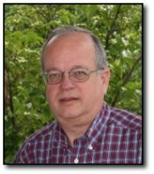
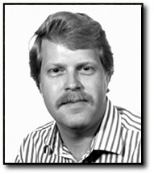

is currently President of
Data-Warp, Inc. It was founded in
1999 and provides consulting services for seismic imaging software
on High-Performance Computers (HPC). Randy has a BSEE from SDSU.
He worked for Amoco at the Tulsa Research Center in the Geophysical
Research Department for 24 years. This provided valuable exposure
to bleeding edge geophysics, seismic processing and the people that
make it happen. Randy's primary interests include advanced
processing architectures, High-Performance Computing and seismic
imaging applications. He designed and implemented the Data
Dictionary System (DDS) in 1995 for Amoco. In 2004 Randy founded
the PSEIS Consortium to "Develop and support a world class
seismic processing platform that is suitable for production
processing and R&D activities".

has a PhD in Nuclear Physics from UCLA. He has worked for
Amoco at the Tulsa Research Center since 1979 and now for BP since 1999.
Jerry worked with Randy in some of the early years of development on
DDS and at the time of the BP merger took over the support
efforts of DDS. At that time the Crays were dropped and the Disco
format was no longer used. But the later merger with ARCO
helped make the transition to Linux clusters more effectively
from the older Thinking Machines' CM5's. In 2003 FreeDDS was released
by BP under an open-source license through the
FreeUSP website (thanks to Paul
Garossino and their
FreeUSP License).
It includes a small collection of seismic imaging programs and
associated utilities written at the Houston
Exploration and Technology Group within BP America Inc. This is
being offered in the hopes that it may foster education,
understanding and collaboration amongst the world wide seismic
imaging community. DDS continues to provide the software
infrastructure for advanced seismic imaging at one of the world's
largest geophysical HPC centers

has worked with USP from in early inception in 1988. In 2009
Joe started supporting DDS in preparation for Jerry's retirement in
early 2012.